Try it
Try ZYVORA on your own computer.
One command, about five minutes, and a hospital full of invented patients to look around. No sign-up, nothing to buy, and nothing leaves your machine.
- About 5 minutes
- Runs on your computer
- Remove in one command
- Synthetic data only
- Not a certified medical product
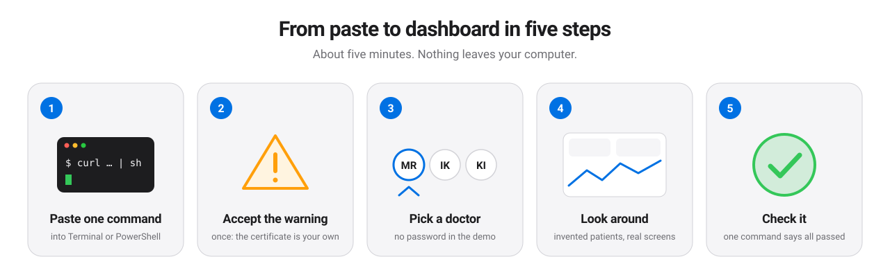
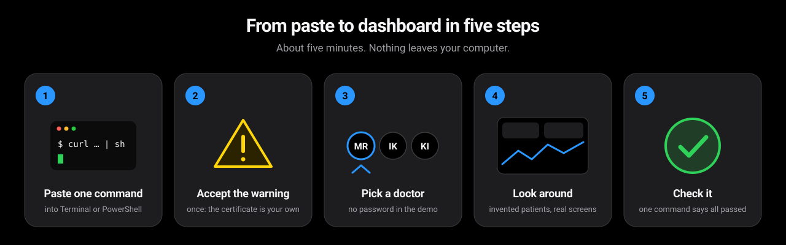
Step 1
Pick your computer.
We guessed from your browser; change it if we were wrong.
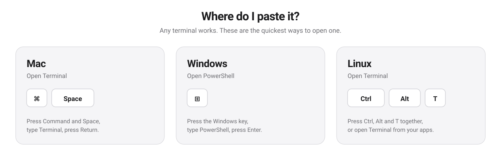
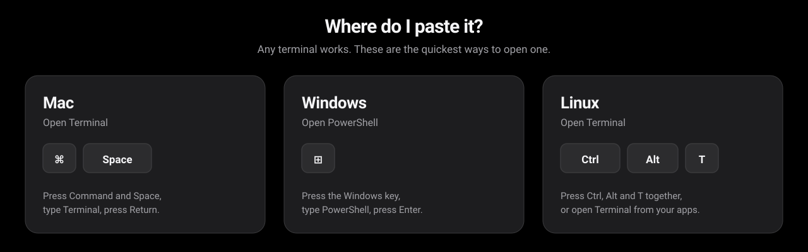
Mac
Open Terminal, paste this, press Return.
curl -fsSL https://github.com/zyvorai/zyvor-zyvora-site/releases/latest/download/get.sh | sh -s -- up --demo --seedYou need nothing installed first. If there is no container engine the installer offers to set one up (Homebrew, then podman) and asks before it does anything. Apple Silicon and Intel both work.
Windows
Not yet verified on a Windows PC. The script is tested with simulated Windows calls only. If you try it, please tell us what you see (feedback link at the bottom).
Open PowerShell, paste this, press Enter. It runs ZYVORA inside WSL 2 (Windows 10 version 2004 or later, or Windows 11).
& ([scriptblock]::Create((irm https://github.com/zyvorai/zyvor-zyvora-site/releases/latest/download/get.ps1))) up --demo --seedIf WSL or a container engine is missing it asks before setting them up. Windows will ask for administrator approval and a restart; after that, run the same command again.
Linux
Open a terminal, paste this, press Enter.
curl -fsSL https://github.com/zyvorai/zyvor-zyvora-site/releases/latest/download/get.sh | sh -s -- up --demo --seedIf there is no container engine it offers to install podman with apt or dnf (sudo asks for your password) and asks first.
Steps 2 to 4
What you will see.
2 The installer runs
It downloads two small images, starts ZYVORA, loads invented patients, and opens your browser. The picture is the end of a real run.
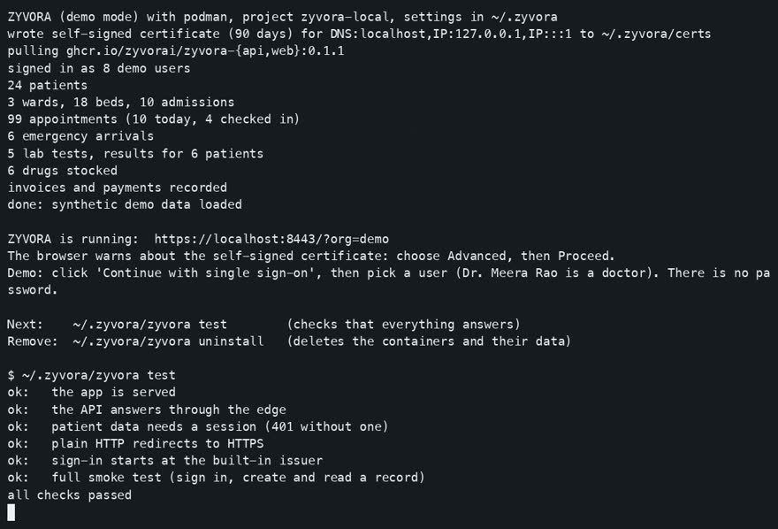
3 The browser warns once
The demo uses a security certificate it made itself, so every browser shows a warning the first time. It is safe here: the address is your own computer. Click Advanced, then Proceed.
- Chrome, Edge: Advanced, then Proceed
- Safari: Show Details, then visit this website
- Firefox: Advanced, then Accept the Risk
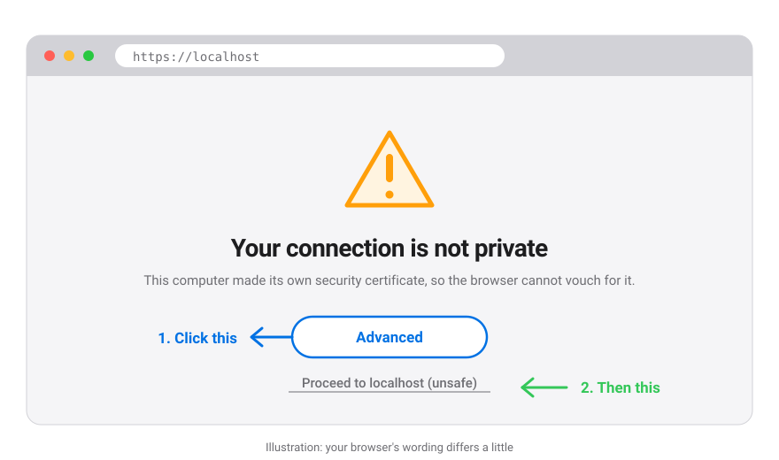
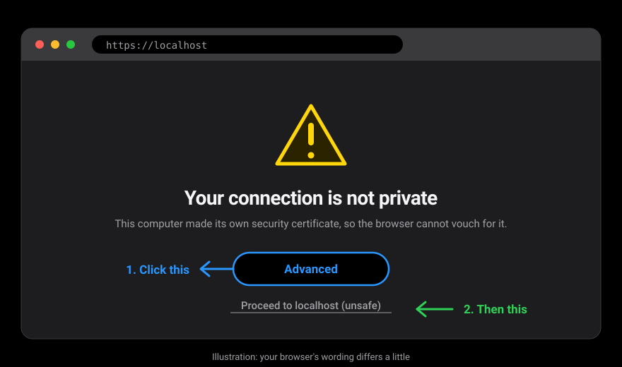
4 Choose a demo user
Click Continue with single sign-on. On the next page pick Dr. Meera Rao. There is no password in the demo, because every user here is invented. Real installations sign in through the hospital’s own identity provider.
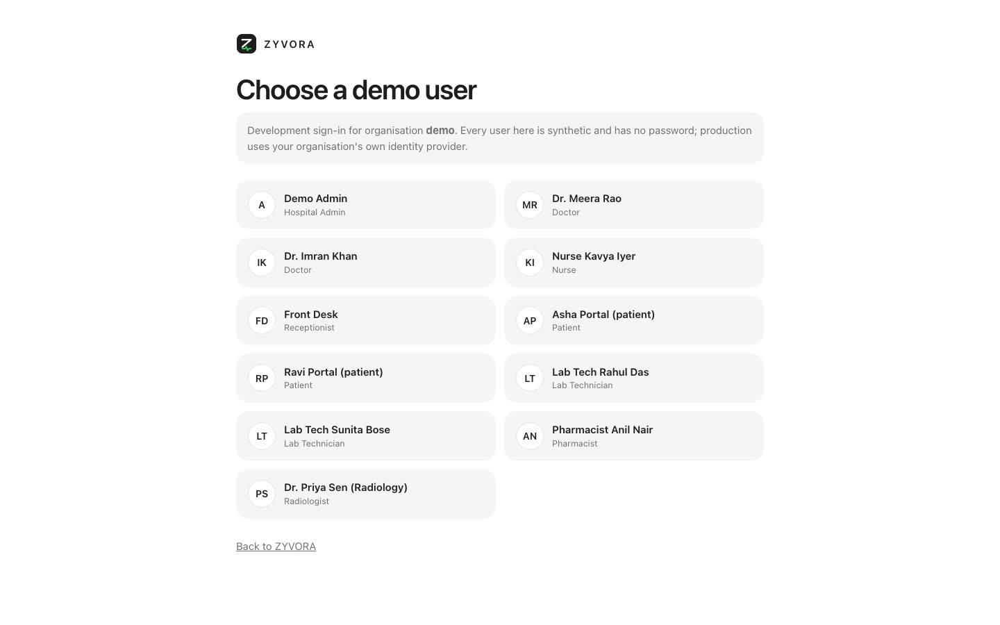
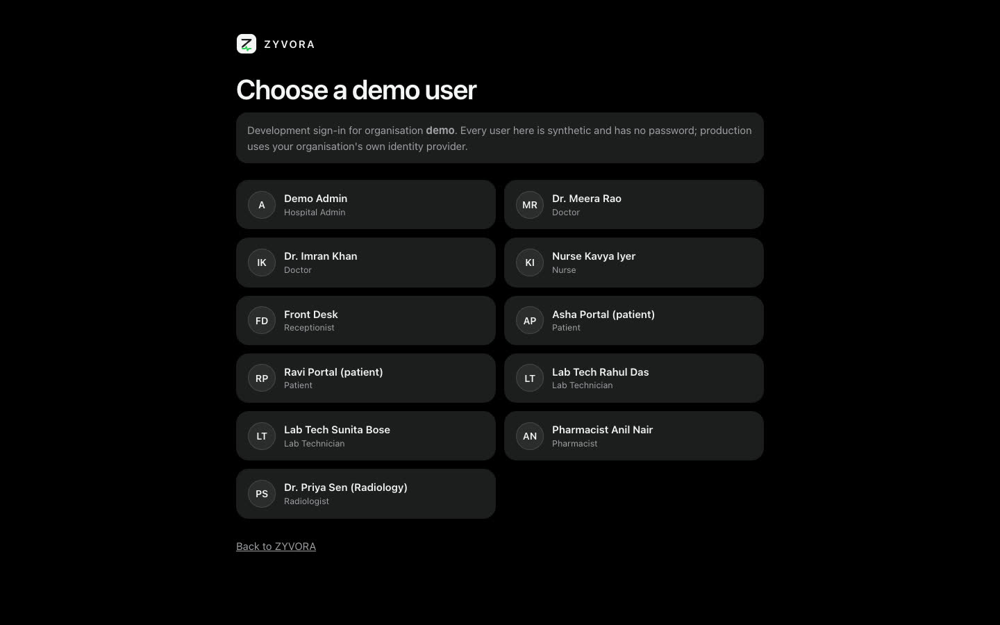
Watch it first
Two minutes, start to finish.
Silent recordings of a real run. Nothing moves until you press play.
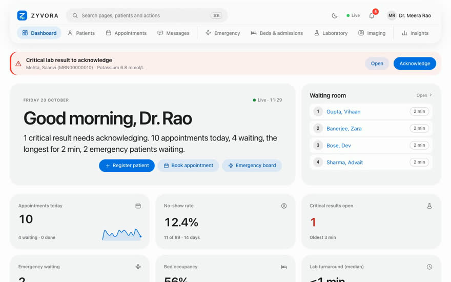
Step 5
A doctor’s test drive.
Eight things to try, about ten minutes. Tick them off as you go; your ticks stay in this browser only.
0 of 8 tried
On the sign-in page choose Continue with single sign-on, then Dr. Meera Rao. If a welcome tour appears, press Skip.
You should see A dashboard that says “Good morning, Dr. Rao”, a waiting room and a red banner.
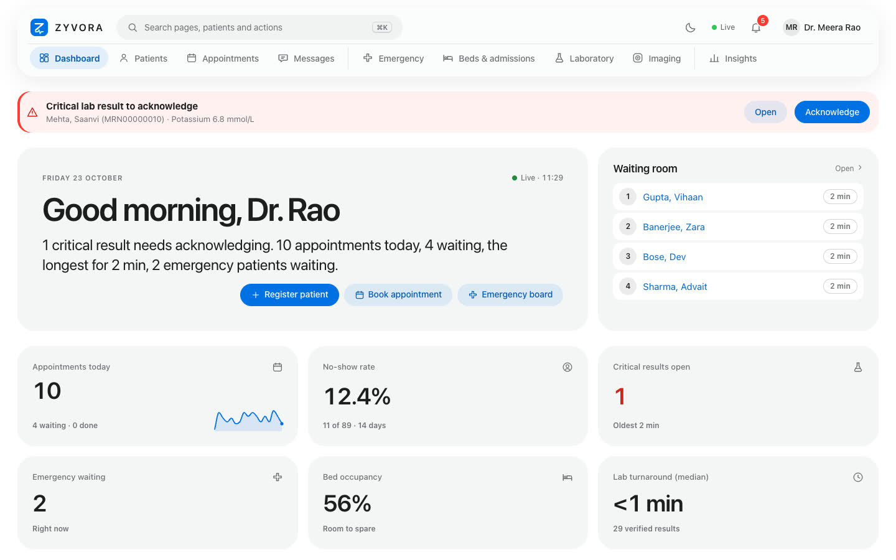
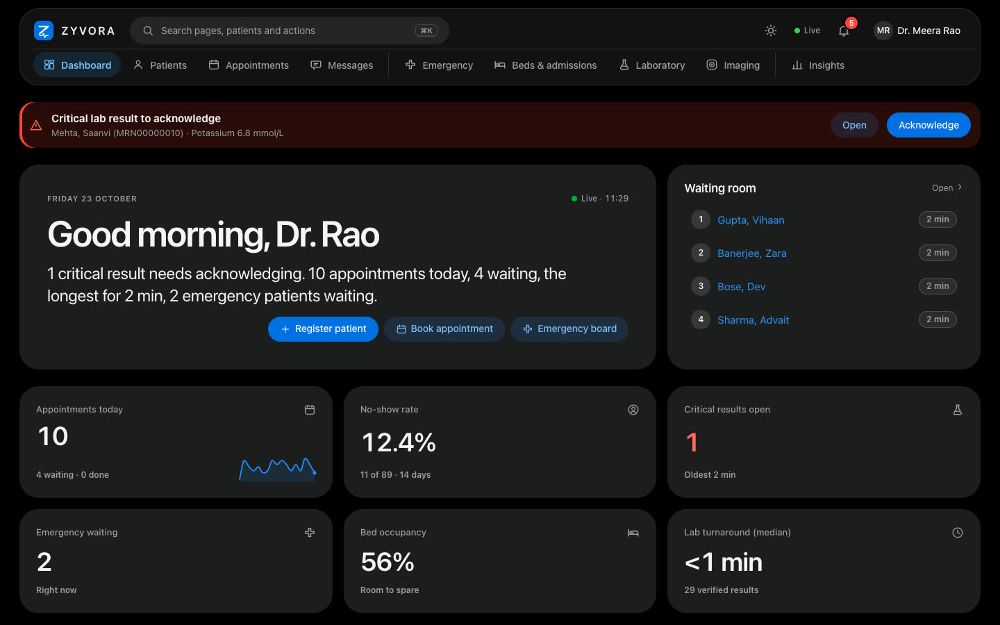
Look at the Waiting room card, then open Appointments in the top bar.
You should see Today’s appointments with a queue number, status, and Check in, No-show and Cancel actions.
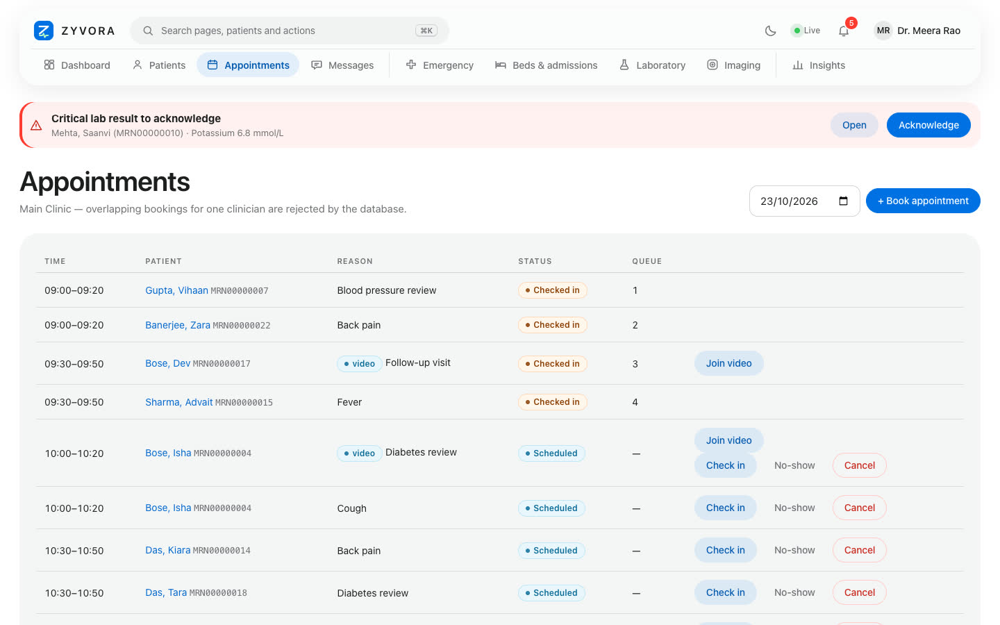
Click Open on the red banner to read the result, then Acknowledge.
You should see The banner goes away for everyone at once. Unacknowledged results escalate to the nurses.
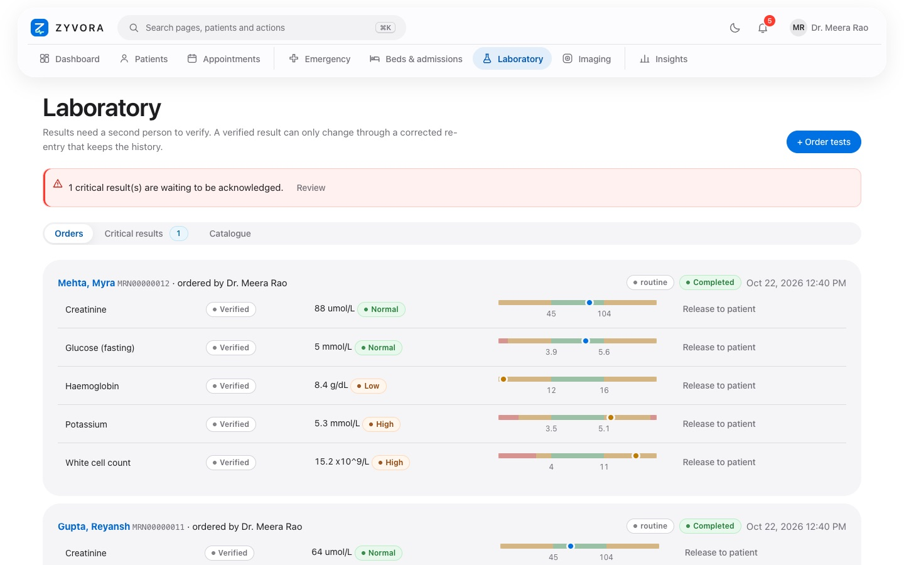
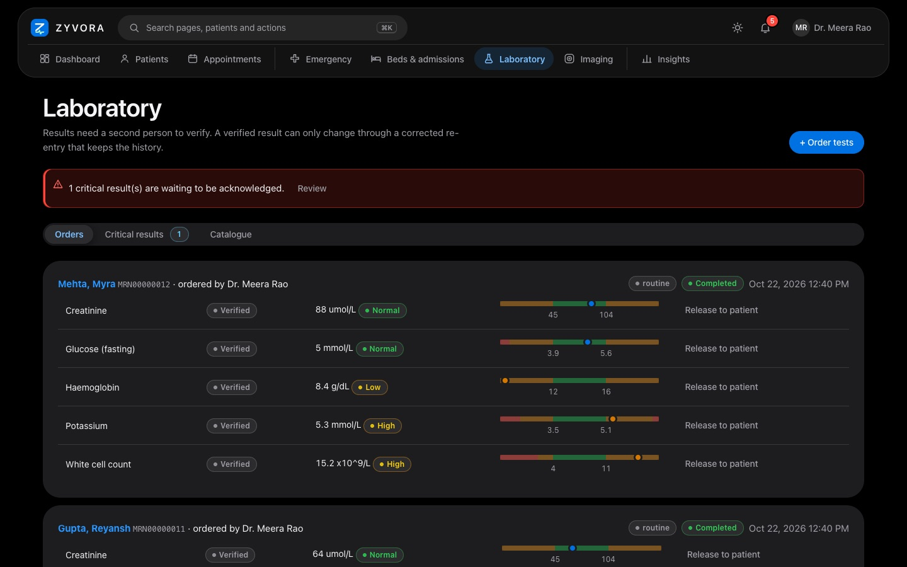
Patients, then a name, then Start encounter. Write a note, add a vital sign, prescribe something.
You should see The allergy card comes first. Notes keep every revision, and signing is for doctors only.
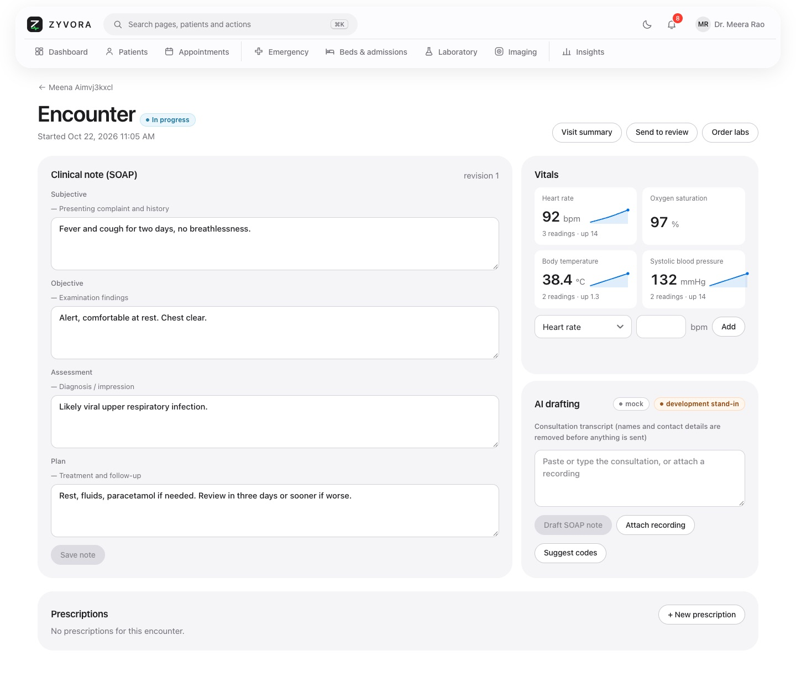
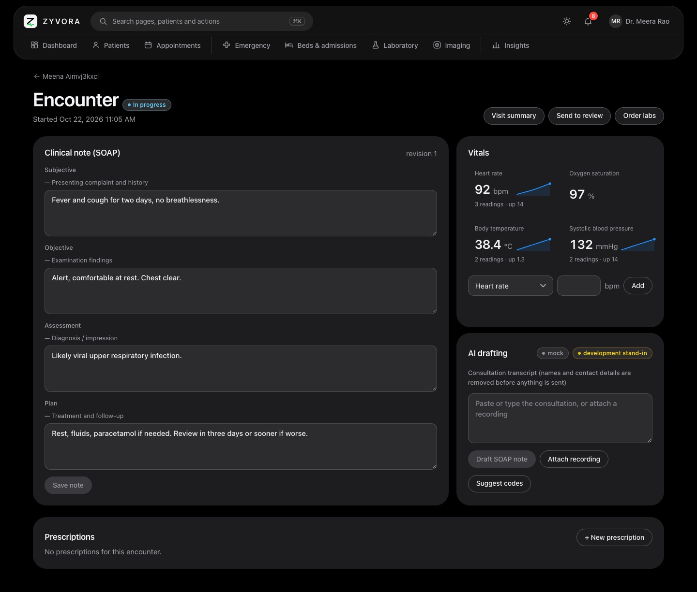
On a patient choose Message the care team, tick Urgent, send. Then open the account menu, sign out, and sign in as Nurse Kavya Iyer.
You should see The nurse sees an alert that stays until it is opened. Every user in the demo is invented and has no password.
Open Emergency in the top bar.
You should see Arrivals by urgency, with triage and bed placement.
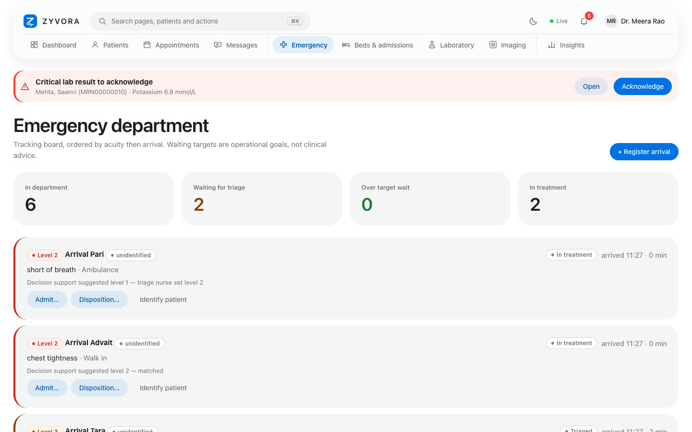
Press Cmd+K (Mac) or Ctrl+K, type bed, press Enter.
You should see You jump to Beds and admissions. Patient names are searchable here too.
Click the moon icon in the top bar.
You should see The whole app changes appearance and remembers it.
The assistant that drafts notes is a stand-in in the demo, and every patient, result and number is invented. Nothing you type leaves your computer.
Afterwards
Check it, or take it away.
Did everything install correctly?
Run ~/.zyvora/zyvora test. It signs in, creates a record and reads it back. all checks passed means everything works.
Remove it
Run ~/.zyvora/zyvora uninstall. The containers and their data are deleted; only a small settings folder, ~/.zyvora, stays until you delete it.
If something goes wrong
Common questions.
The browser says the connection is not private
That is expected: the demo makes its own security certificate on your computer. Choose Advanced, then Proceed (Safari: Show Details, then visit this website). You do this once per browser.
Nothing opened, or the page cannot be reached
Give it a minute after the command finishes, then run ~/.zyvora/zyvora status (all five lines should say Up) and open the address the installer printed. The app listens on port 8443 on this computer only.
It asked me to install something
If there is no container engine it offers to install one (podman, using Homebrew on a Mac, or your package manager on Linux; WSL and podman on Windows). It always asks first. Answering no stops with the exact steps to do it yourself.
Port 8443 is already in use
Add a different port at the end of the command, for example --port 9443 (Windows: put it after --seed as well).
Windows: what happens the first time
If WSL 2 is missing the script offers to install it. Windows asks for administrator approval, then you restart Windows, open Ubuntu once from the Start menu to create a Linux user, and run the same command again.
I am behind a company proxy or firewall
The installer downloads from github.com and ghcr.io. Ask IT to allow both, or try from a home connection.
Start over, or remove everything
~/.zyvora/zyvora uninstall deletes the containers and their data. To also delete the settings folder: rm -rf ~/.zyvora (Windows: run it inside Ubuntu). Then run the install command again.
Tell us how it went.
What worked, what confused you, what you wanted to see. If something failed, include the output of ~/.zyvora/zyvora test and your computer type.